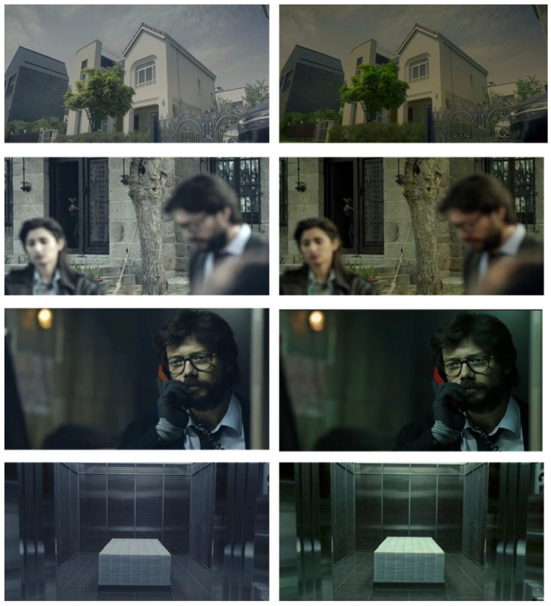

Welfare Compass
Seoul AI Hackathon · Top 20 / 181 teams · 2025
Problem
300+ welfare policies scattered across documents — citizens struggle to determine eligibility, especially those with low digital literacy.
Approach
- RAG pipeline using LangChain + FAISS for policy document retrieval
- Natural language query processing to extract relevant policies and eligibility criteria
- Streamlit-based conversational interface for accessible interaction
Outcome
Demonstrated effective retrieval for complex policy queries, advancing to hackathon finals.
Tech Stack
Business Impact: Reduces citizen service center workload by automating policy matching — a scalable RAG solution applicable to any document-heavy consultation workflow.

Drama Color Pattern Analysis
Published · Journal of the Korean Data Analysis Society · Feb 2025
Problem
Color's impact on viewer emotional engagement was based on subjective judgment — no quantitative analysis existed for cross-cultural comparison.
Approach
- ConvNeXtLarge for scene clustering across drama episodes
- HSV/LAB color metrics comparing Korean vs Spanish versions of Money Heist
- User survey (n=86) for preference validation
Outcome
Korean color grading preferred 1.5× overall across the full sample (p<.05). First author publication.
Tech Stack
Business Impact: Data-driven framework for visual content optimization — applicable to automated color grading pipelines, content recommendation, and A/B testing visual assets at scale.

Welding Defect Detection
Presented at IPIU 2024 · First Author
Problem
No real defect images available in manufacturing environments due to security and cost constraints — severe training data shortage.
Approach
- CycleGAN for domain adaptation (X-ray radiographs → inspection images)
- Preprocessing pipeline (contrast enhancement, wavelet filtering) to suppress artifacts
- YOLOv5 with two-stage transfer learning (COCO → synthetic defects)
Outcome
87.5% mAP achieved on synthetic-to-real defect detection. First author conference paper.
Tech Stack
Business Impact: Eliminates dependency on restricted real-world defect data — enabling automated quality inspection deployment in manufacturing environments where labeled data is unavailable.